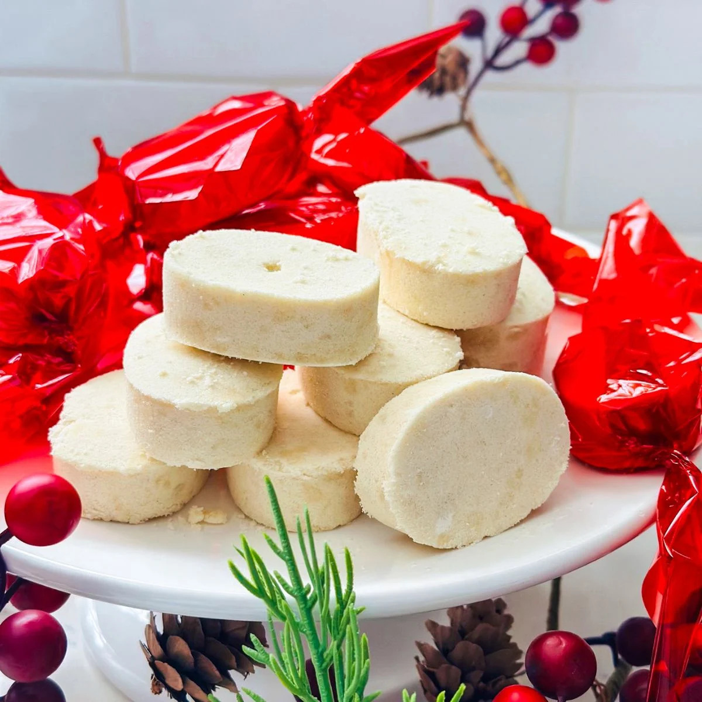
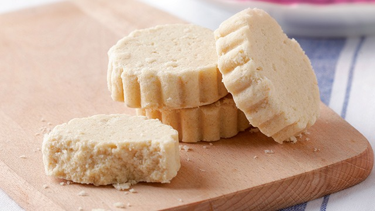
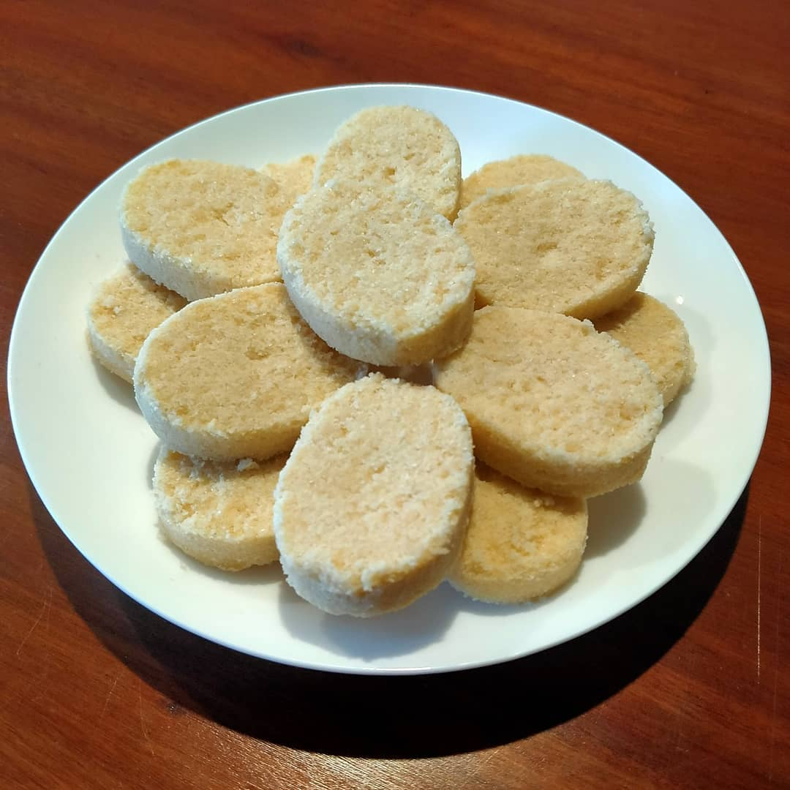
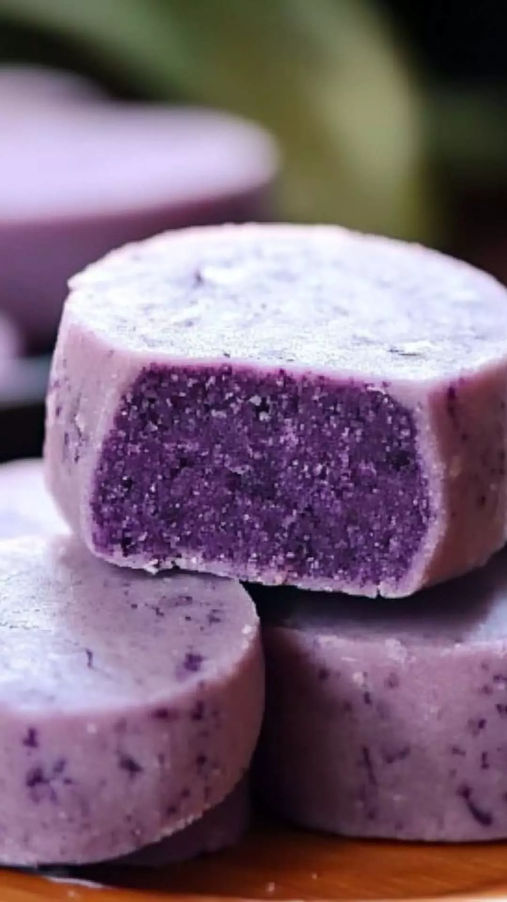

Polvoron





History
Ang Polvoron ay isang traditional Filipino snack na hango sa Spanish “polvo,” ibig sabihin ay powder o flour. Dinala ito ng mga Kastila sa Pilipinas noong panahon ng Spanish colonization of the Philippines at kalaunan ay inangkop sa lokal na panlasa. Sa Pilipinas, ito ay creamy, melt-in-your-mouth, at madalas gawing souvenir o pang-merienda. Madali itong i-personalize sa pamamagitan ng pagdagdag ng chocolate, nuts, ube, o toasted rice, kaya naging versatile at patok sa lahat ng edad.
Ingredients & Notes
Toasted flour
Powdered milk
Sugar
Butter
Optional: nuts, ube, chocolate
Price
₱10